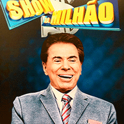

16 de fevereiro de 1959 - Senor Abravanel registra a primeira empresa em seu nome, depois de virar sócio do também radialista Manoel da Nóbrega no Baú da Felicidade. Na época, o comprador pagava o carnê do Baú da Felicidade durante o ano e recebia uma caixa de brinquedos no Natal
1961 - Ainda no começo da televisão no Brasil, Silvio Santos compra duas horas da programação de domingo da TV Paulista. Ao meio-dia, o apresentador baseava seu show em brincadeiras e prêmios, tudo relacionado ao Baú da Felicidade (na foto, registro da 1ª empresa de Silvio)
1961 - Ainda no começo da televisão no Brasil, Silvio Santos compra duas horas da programação de domingo da TV Paulista. Ao meio-dia, o apresentador baseava seu show em brincadeiras e prêmios, tudo relacionado ao Baú da Felicidade (na foto, registro da 1ª empresa de Silvio)
1974 -O empresário adquire 50% da rede Record e vira sócio de Paulo Machado de Carvalho, que detinha a outra metade da emissora.
1975 - Silvio Santos recebe do governo militar concessão para o Canal 11, do Rio de Janeiro. Em 22 de dezembro é assinado o contrato para criar o que seria no futuro Sistema Brasileiro de Televisão (SBT).
25 de março de 1981 - Silvio Santos recebe do então presidente João Figueiredo a concessão de quatro canais - TV Tupi de São Paulo, TV Marajoara de Belém, TV Piratini de Porto Alegre e TV Continental do Rio de Janeiro. É a origem oficial do SBT
1975 - Silvio Santos recebe do governo militar concessão para o Canal 11, do Rio de Janeiro. Em 22 de dezembro é assinado o contrato para criar o que seria no futuro Sistema Brasileiro de Televisão (SBT).
25 de março de 1981 - Silvio Santos recebe do então presidente João Figueiredo a concessão de quatro canais - TV Tupi de São Paulo, TV Marajoara de Belém, TV Piratini de Porto Alegre e TV Continental do Rio de Janeiro. É a origem oficial do SBT
